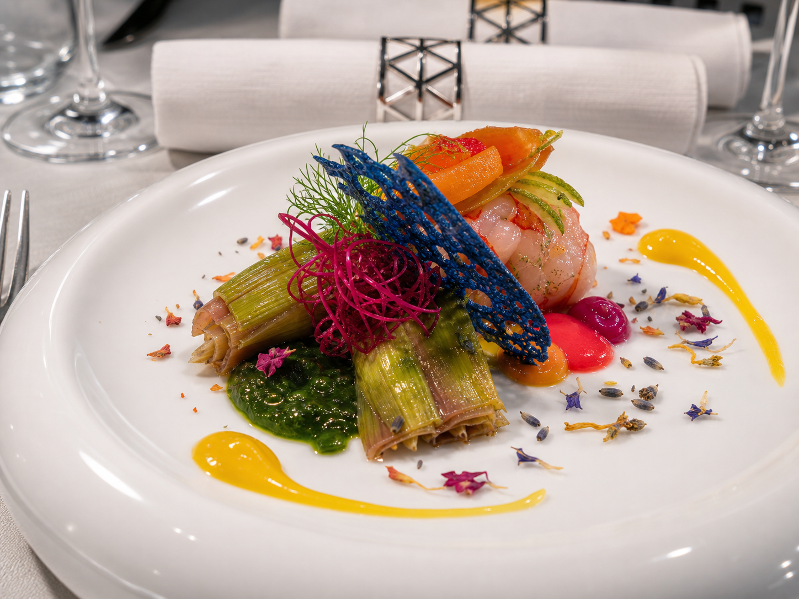
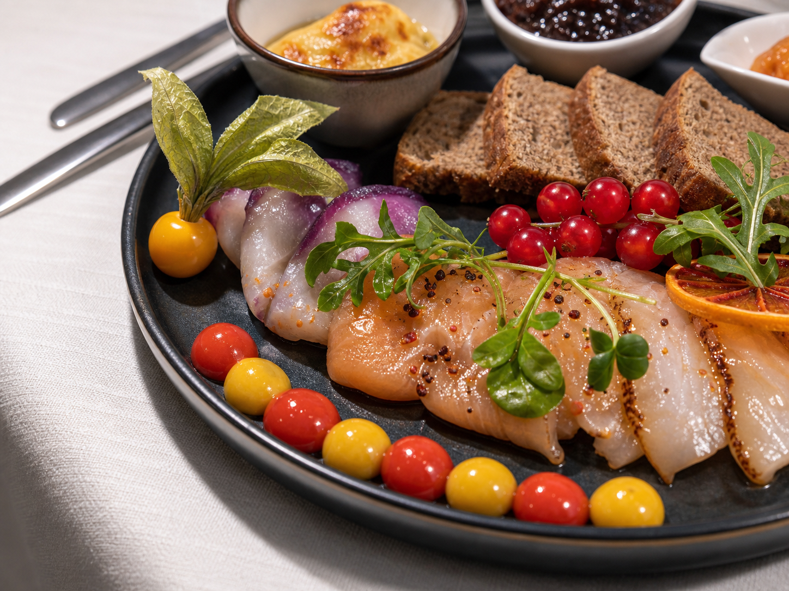
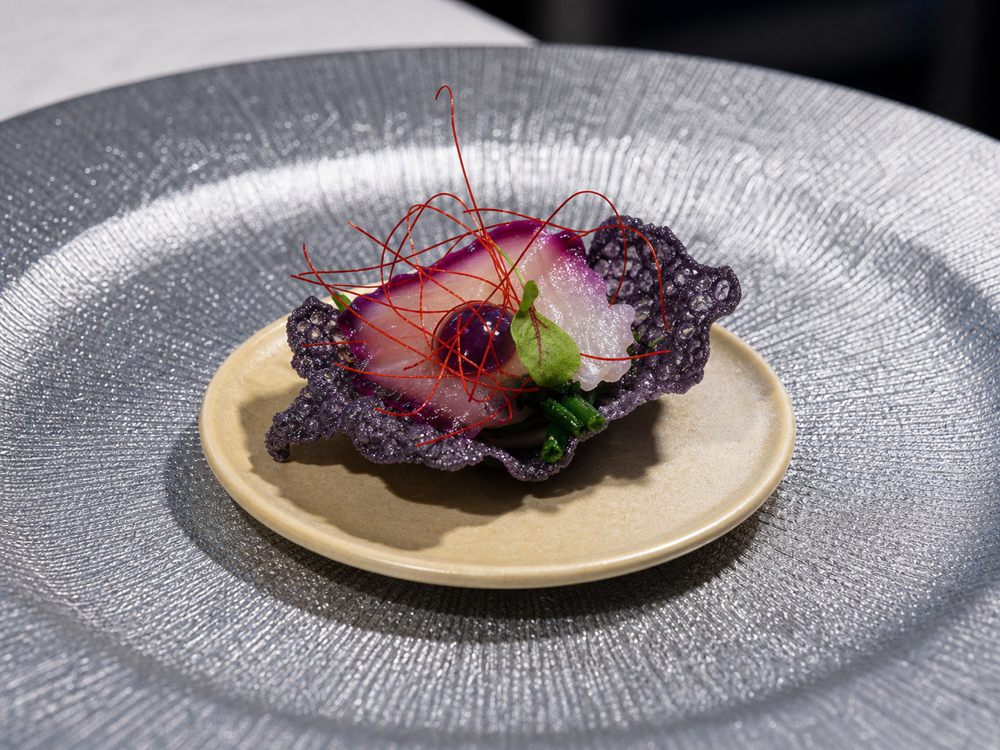
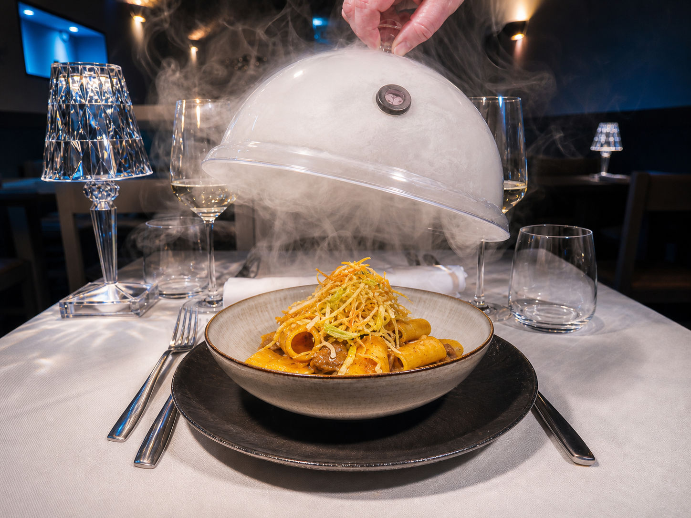
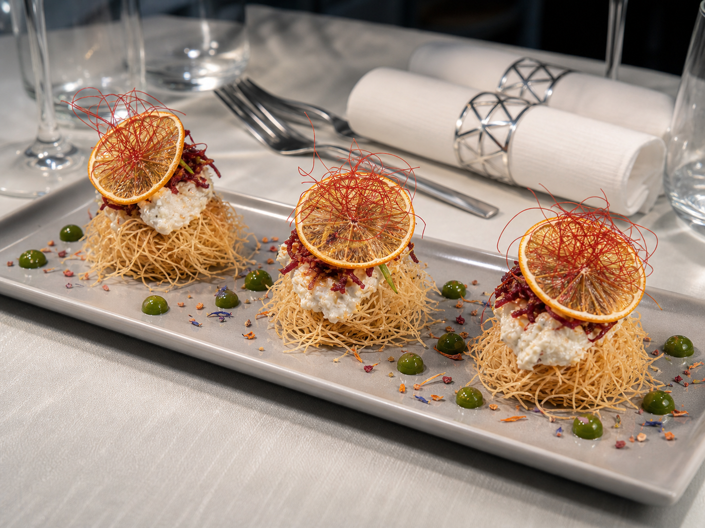
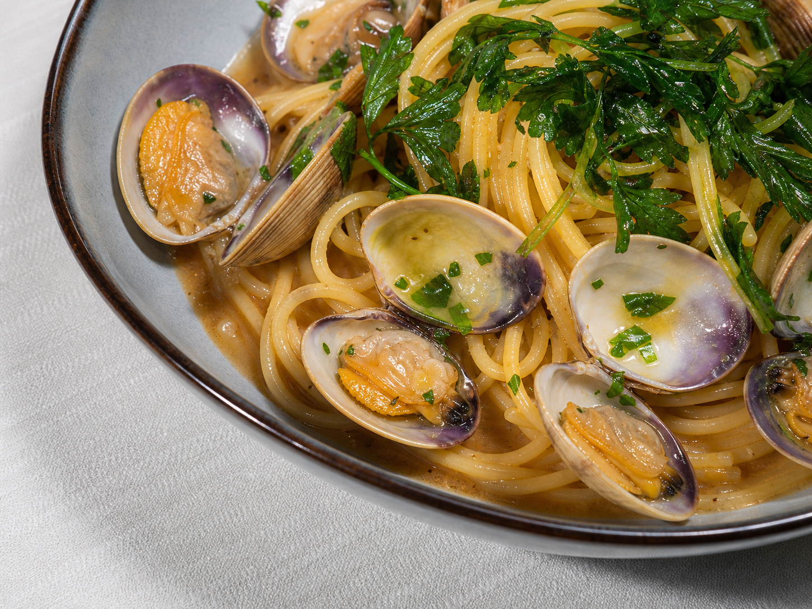
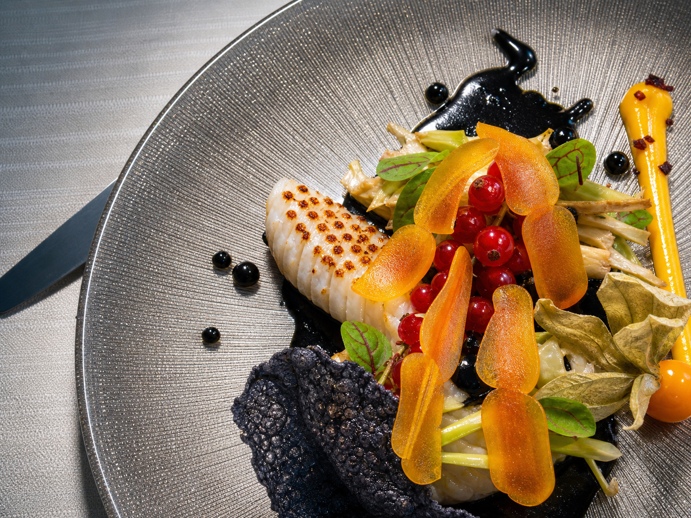
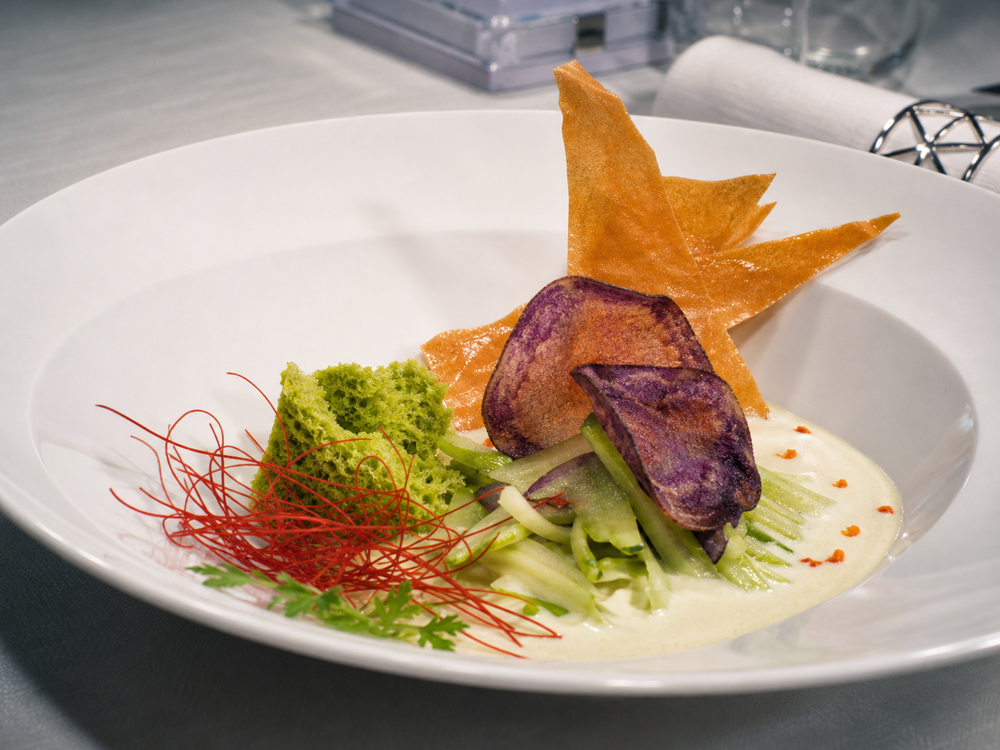
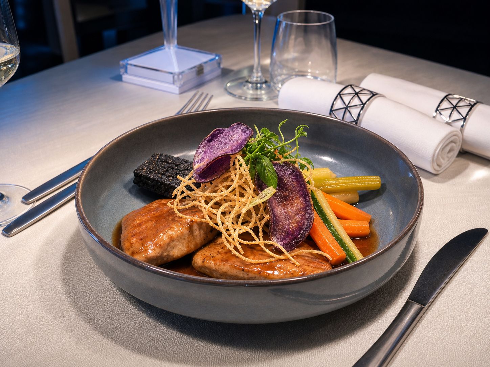
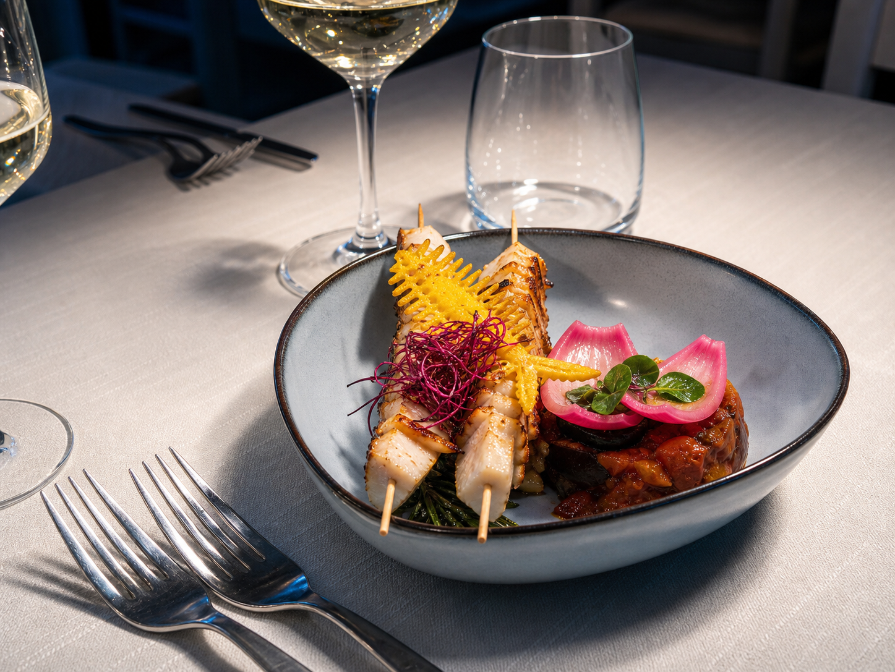

Piatti selezionati
Galleria
Crudi, primi, secondi e mare contemporaneo in immagini.

Dalla cucina
Piatti, materia, sala

Contrasti
Gamberi, vegetali, agrumi




Servizio
Vapore aromatico




Composizione
Colore, mare, precisione


